第二章：Spectre 仿真与推导对照
本轮使用远程 Cadence Spectre 18.1.0.077 实际运行网表，通过 virtuoso-bridge-lite 0.8.0 下载原始 PSF。涵盖 20 组推导的代表模型；以下清楚列出每个电路与检查，没有将它等同于逐一完成所有幻灯片电路。
结果总览
| 验证 | 数量 | 结果 |
|---|---|---|
| 显式元件的小信号 AC | 32 | 全部通过 |
| gm/Id 法确定尺寸的 MOS1 电路 AC | 7 | 全部通过 |
| 直接极零分析 | 5 | 全部通过 |
| 极零对／基准瞬态 | 3 | 全部通过 |
| MOS 工作区 | 10 只 | 全部在饱和区 |
比较完整式时，AC 与极零位置容许相对误差为 ；瞬态容许归一化输出的绝对误差为 。线性 AC 最大误差约 ，MOS AC 约 ，极零位置约 。原始 PSF 有输出有效位数限制。
完整验证记录 · gm/Id 选点与尺寸 · MOS 工作点
模型与仿真层级
- 线性元件模型：使用真正的 Spectre resistor、capacitor、inductor、vccs、vcvs 创建连接。KCL 闭式公式另由 Python 计算，不把完整 H(s) 塞进单个行为源再称作电路验证。增益增强的辅助极点用实际 R/C 实现。
- 晶体管模型：使用明列常数的 MOS1 教学模型，从 DC 扫描取得 gm/Id 与电流密度，选工作点与尺寸，再用 Spectre 求 DC／AC。
- 结果比对：MOS 仿真保留其本征 Cgs；把实际工作点的 gm、gds、电容代入相应完整小信号式。另列教材简式的近似偏差，不把近似失效混成仿真失败。
没有指定晶圆厂 PDK，因此本轮不作工艺、工艺角、蒙特卡洛 或版图寄生验证。线性 AC 扫至 1 THz、MOS AC 扫至 10 GHz，是检查指定数学模型的极限；这些上限不代表长沟道 MOS 实际可用带宽。
gm/Id：先扫描，再选工作点与尺寸
NMOS／PMOS 各以 µm、 µm、 V，扫描 – V，步长 5 mV。教学模型采 V、 µA/V²、 V⁻¹、、 nm。其余参数与引脚 D/G/S/B 顺序保存在网表。
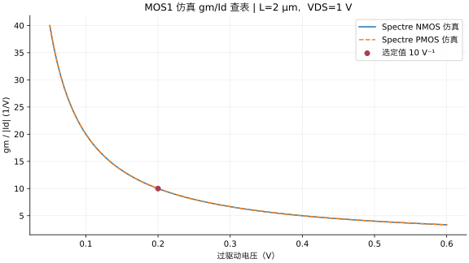
从仿真曲线选 V⁻¹，对应 V；沿用 029 的 MHz、 pF：
教材忽略沟道长度调制的尺寸式给 µm；本次 MOS1 电流含 ，因此查表选出的 W 较小。这是可解释的模型差异，没有直接把教材尺寸当成 PDK 尺寸。
MOS1 查表网表 · 完整查表 CSV · 七个 MOS 电路网表
直接极零分析
使用 Spectre pz，并设 docancel=no，因此可以看到相消前重叠的极点与零点。PSF 中的位置单位是 Hz；与理论根 比较前先除以 。
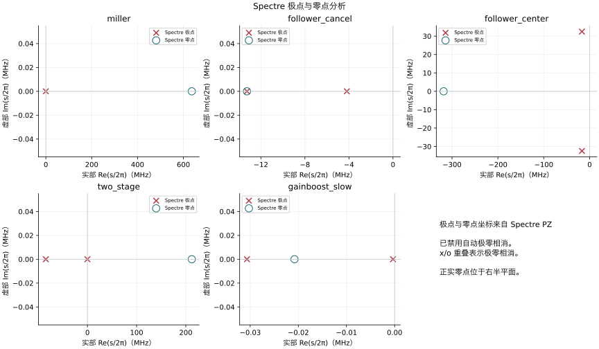
- 米勒右半平面零点约 +636.620 MHz。
- 两级米勒补偿右半平面零点约 +212.207 MHz。
- 跟随器相消案例在 −13.2629 MHz 有重叠极点／零点，剩余主极点约 −4.18829 MHz。
- 跟随器复极点案例得到共轭极点，与二次分母判别式一致。
极零对与建立过程
闭环由受控源、积分电容及一个 R/C 极点构成。输入为延迟 1 µs、上升时间 1 ns 的阶跃；理论参考对有限上升时间作了积分，避免把理想瞬时阶跃误差算给 Spectre。
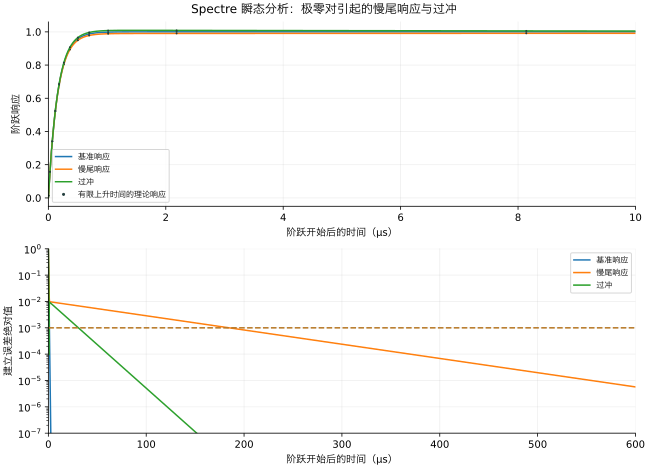
单极点基准达到 0.1% 误差约需 1.101 µs；具有极零对引起的慢尾响应的案例约需 184.641 µs。另有一个慢速留数为负的案例呈现过冲，约 30.741 µs 进入 0.1% 范围。建立时间依下载波形的最后超差点估算，其时间分辨率受保存样点限制。
逐组电路、波形与近似差异
01 · 单管增益与 MOS／BJT 比较
本推导组的代表模型已完成 Spectre 验证；覆盖范围以所列网表为准，未逐一搭建所有幻灯片电路。
intrinsic · 显式小信号组件
由 Spectre 输出的复数波形，逐频点与完整式比较；相位与正负号均纳入。 最大相对误差：5e-08；保存点数：721。
教材近似式另行比较：在 1 Hz–1 MHz，最大相对偏差为 0%。此数字与完整式验证分开；橙色虚线显示近似式。
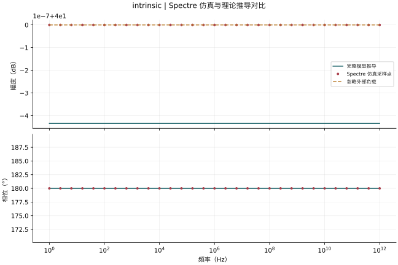
02 · 单极点、GBW 与尺寸数值题
本推导组的代表模型已完成 Spectre 验证；覆盖范围以所列网表为准，未逐一搭建所有幻灯片电路。
loaded_cs · 显式小信号组件
由 Spectre 输出的复数波形，逐频点与完整式比较；相位与正负号均纳入。 最大相对误差：4.57e-06；保存点数：721。
教材近似式另行比较：在 1 Hz–1 MHz，最大相对偏差为 7.36e-05%。此数字与完整式验证分开；橙色虚线显示近似式。
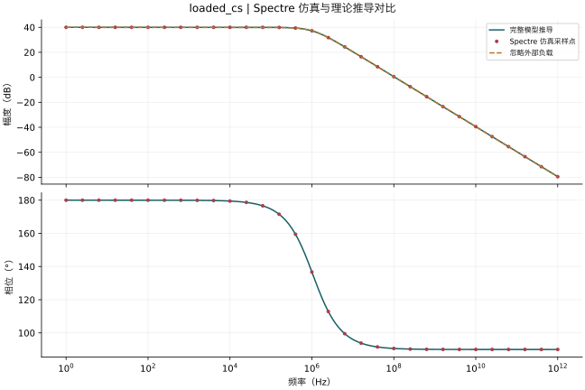
mos_cs · MOS1 教学晶体管
由 Spectre 输出的复数波形，逐频点与完整式比较；相位与正负号均纳入。 最大相对误差：4.57e-06；保存点数：601。
DC 输出：1 V；所有器件通过饱和区检查。完整式使用实际工作点的 gm、gds 与 Cgs。
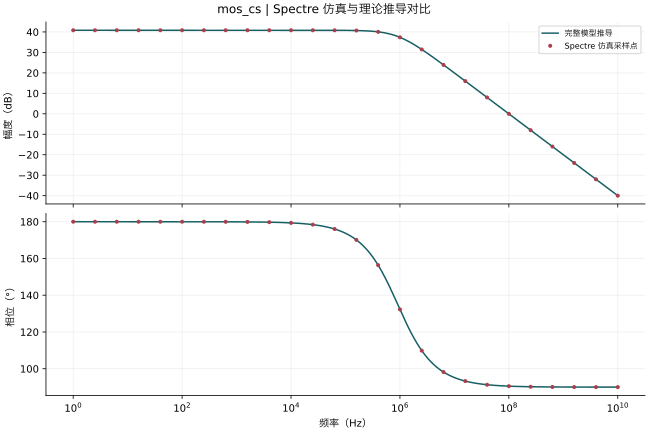
03 · 米勒反馈与 RHP 零点
本推导组的代表模型已完成 Spectre 验证；覆盖范围以所列网表为准，未逐一搭建所有幻灯片电路。
miller · 显式小信号组件
由 Spectre 输出的复数波形，逐频点与完整式比较；相位与正负号均纳入。 最大相对误差：4.17e-06；保存点数：721。
教材近似式另行比较：在 1 Hz–1 MHz，最大相对偏差为 5.77%。此数字与完整式验证分开；橙色虚线显示近似式。
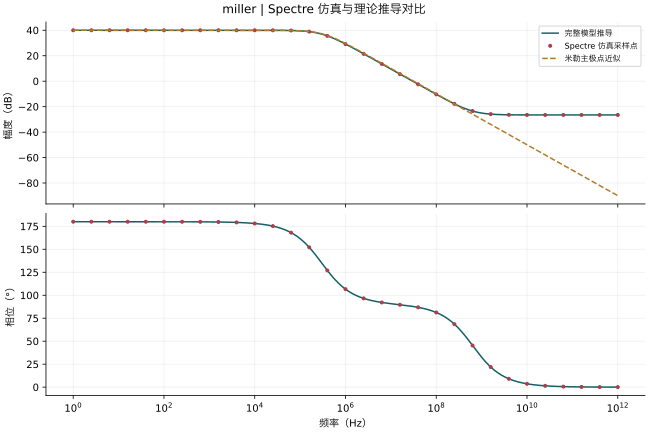
miller_low_rs · 显式小信号组件
由 Spectre 输出的复数波形，逐频点与完整式比较；相位与正负号均纳入。 最大相对误差：3.77e-06；保存点数：721。
教材近似式另行比较：在 1 Hz–1 MHz，最大相对偏差为 15.9%。此数字与完整式验证分开；橙色虚线显示近似式。
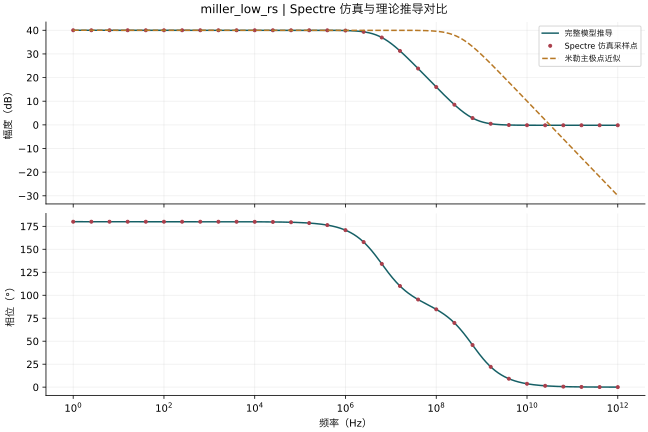
miller_high_rs · 显式小信号组件
由 Spectre 输出的复数波形，逐频点与完整式比较；相位与正负号均纳入。 最大相对误差：4.63e-06；保存点数：721。
教材近似式另行比较：在 1 Hz–1 MHz，最大相对偏差为 1.06%。此数字与完整式验证分开；橙色虚线显示近似式。
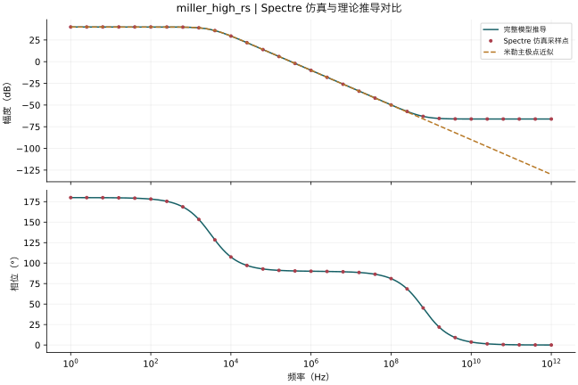
mos_miller · MOS1 教学晶体管
由 Spectre 输出的复数波形，逐频点与完整式比较；相位与正负号均纳入。 最大相对误差：4.5e-06；保存点数：601。
DC 输出：1 V；所有器件通过饱和区检查。完整式使用实际工作点的 gm、gds 与 Cgs。
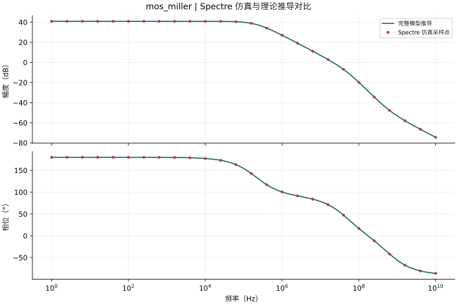
本组另有直接 PZ 结果：miller。详见上方极零图与 JSON。
04 · 源极负反馈与可调跨导
本推导组的代表模型已完成 Spectre 验证；覆盖范围以所列网表为准，未逐一搭建所有幻灯片电路。
degeneration · 显式小信号组件
由 Spectre 输出的复数波形，逐频点与完整式比较；相位与正负号均纳入。 最大相对误差：2e-08；保存点数：721。
教材近似式另行比较：在 1 Hz–1 MHz，最大相对偏差为 61%。此数字与完整式验证分开；橙色虚线显示近似式。
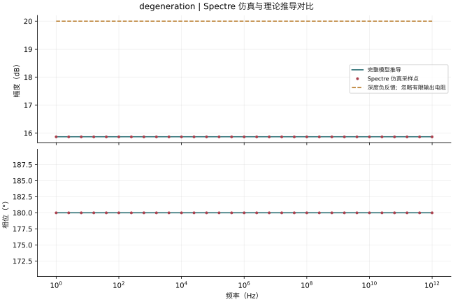
degeneration_zin · 显式小信号组件
由 Spectre 输出的复数波形，逐频点与完整式比较；相位与正负号均纳入。 最大相对误差：1.59e-05；保存点数：721。
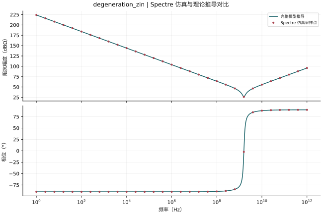
mos_degen · MOS1 教学晶体管
由 Spectre 输出的复数波形，逐频点与完整式比较；相位与正负号均纳入。 最大相对误差：4.23e-06；保存点数：601。
DC 输出：1.2 V；所有器件通过饱和区检查。完整式使用实际工作点的 gm、gds 与 Cgs。
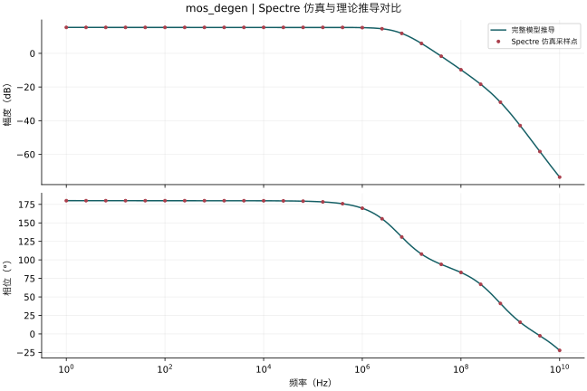
05 · 二极管连接与有源负载
本推导组的代表模型已完成 Spectre 验证；覆盖范围以所列网表为准，未逐一搭建所有幻灯片电路。
diode_z · 显式小信号组件
由 Spectre 输出的复数波形，逐频点与完整式比较；相位与正负号均纳入。 最大相对误差：4.55e-06；保存点数：721。
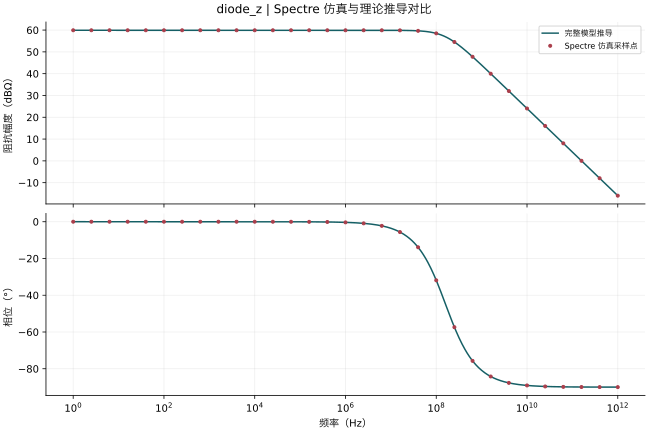
diode_load · 显式小信号组件
由 Spectre 输出的复数波形，逐频点与完整式比较；相位与正负号均纳入。 最大相对误差：3.98e-06；保存点数：721。
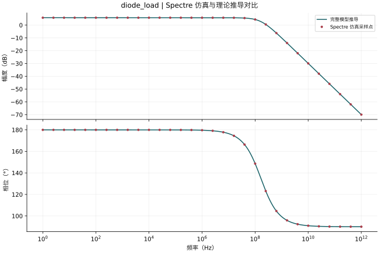
mos_diode_load · MOS1 教学晶体管
由 Spectre 输出的复数波形，逐频点与完整式比较；相位与正负号均纳入。 最大相对误差：3.29e-06；保存点数：601。
DC 输出：0.65 V；所有器件通过饱和区检查。完整式使用实际工作点的 gm、gds 与 Cgs。
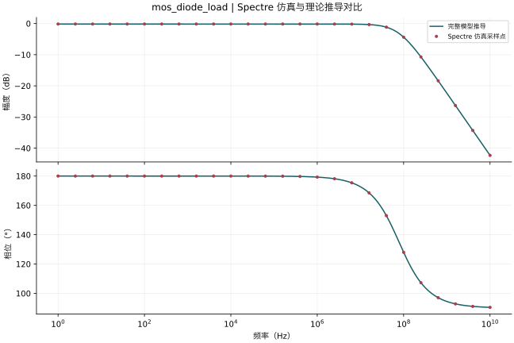
06 · CMOS 反相器：DC 与匹配
本推导组的代表模型已完成 Spectre 验证；覆盖范围以所列网表为准，未逐一搭建所有幻灯片电路。
inverter_dc · 显式小信号组件
由 Spectre 输出的复数波形，逐频点与完整式比较；相位与正负号均纳入。 最大相对误差：4e-06；保存点数：721。
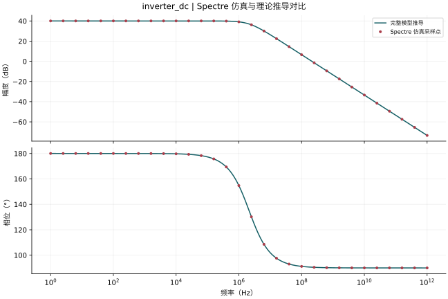
07 · CMOS 反相器：完整频率响应
本推导组的代表模型已完成 Spectre 验证；覆盖范围以所列网表为准，未逐一搭建所有幻灯片电路。
inverter_ac · 显式小信号组件
由 Spectre 输出的复数波形，逐频点与完整式比较；相位与正负号均纳入。 最大相对误差：4.82e-06；保存点数：721。
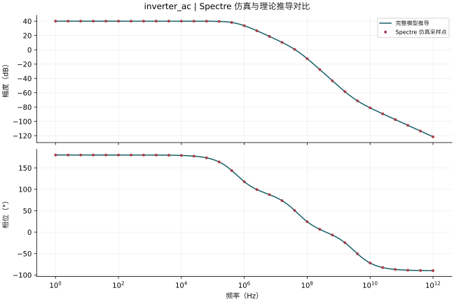
mos_inverter · MOS1 教学晶体管
由 Spectre 输出的复数波形，逐频点与完整式比较；相位与正负号均纳入。 最大相对误差：4.69e-06；保存点数：601。
DC 输出：0.65 V；所有器件通过饱和区检查。完整式使用实际工作点的 gm、gds 与 Cgs。
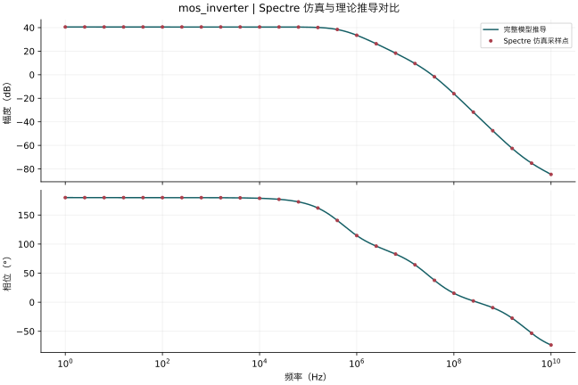
08 · 源极与射极跟随器：DC
本推导组的代表模型已完成 Spectre 验证；覆盖范围以所列网表为准，未逐一搭建所有幻灯片电路。
follower_dc · 显式小信号组件
由 Spectre 输出的复数波形，逐频点与完整式比较；相位与正负号均纳入。 最大相对误差：4.36e-06；保存点数：721。
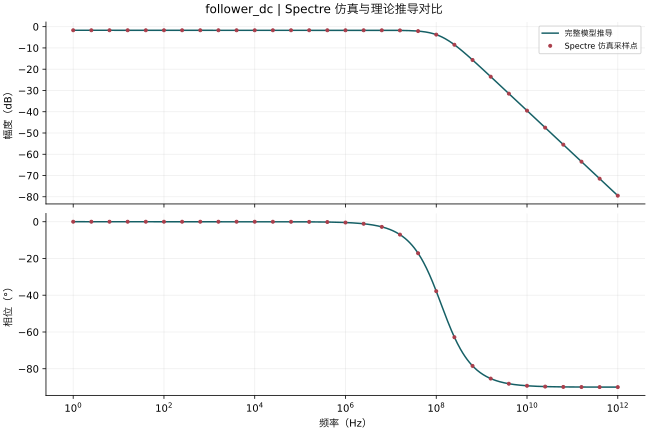
09 · 源极跟随器：极点、零点与峰化
本推导组的代表模型已完成 Spectre 验证；覆盖范围以所列网表为准，未逐一搭建所有幻灯片电路。
follower_cancel · 显式小信号组件
由 Spectre 输出的复数波形，逐频点与完整式比较；相位与正负号均纳入。 最大相对误差：4.06e-06；保存点数：721。
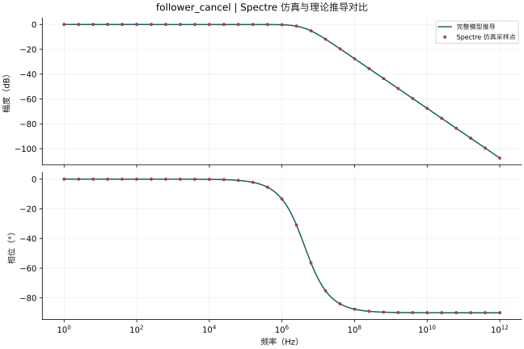
follower_cancel_z · 显式小信号组件
由 Spectre 输出的复数波形，逐频点与完整式比较；相位与正负号均纳入。 最大相对误差：4.28e-06；保存点数：721。
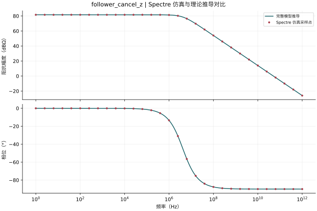
follower_book · 显式小信号组件
由 Spectre 输出的复数波形，逐频点与完整式比较；相位与正负号均纳入。 最大相对误差：3.96e-06；保存点数：721。
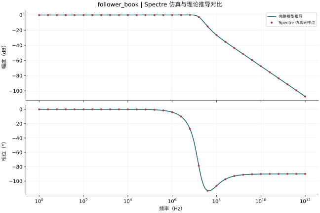
follower_book_z · 显式小信号组件
由 Spectre 输出的复数波形，逐频点与完整式比较；相位与正负号均纳入。 最大相对误差：4.41e-06；保存点数：721。
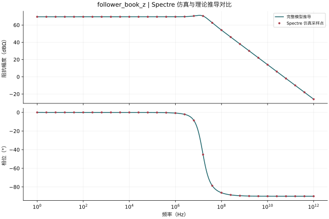
follower_center · 显式小信号组件
由 Spectre 输出的复数波形，逐频点与完整式比较；相位与正负号均纳入。 最大相对误差：5e-06；保存点数：721。
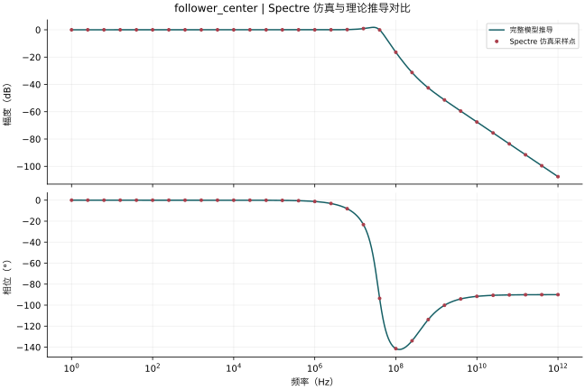
follower_center_z · 显式小信号组件
由 Spectre 输出的复数波形，逐频点与完整式比较；相位与正负号均纳入。 最大相对误差：4.17e-06；保存点数：721。
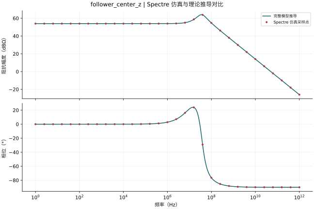
mos_follower · MOS1 教学晶体管
由 Spectre 输出的复数波形，逐频点与完整式比较；相位与正负号均纳入。 最大相对误差：3.76e-06；保存点数：601。
DC 输出：1 V；所有器件通过饱和区检查。完整式使用实际工作点的 gm、gds 与 Cgs。
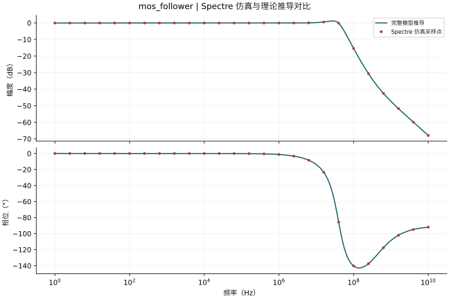
本组另有直接 PZ 结果：follower_cancel、follower_center。详见上方极零图与 JSON。
10 · 射极跟随器：有限 β 与高频阻抗
本推导组的代表模型已完成 Spectre 验证；覆盖范围以所列网表为准，未逐一搭建所有幻灯片电路。
bjt_follower_z · 显式小信号组件
由 Spectre 输出的复数波形，逐频点与完整式比较；相位与正负号均纳入。 最大相对误差：4.03e-06；保存点数：721。
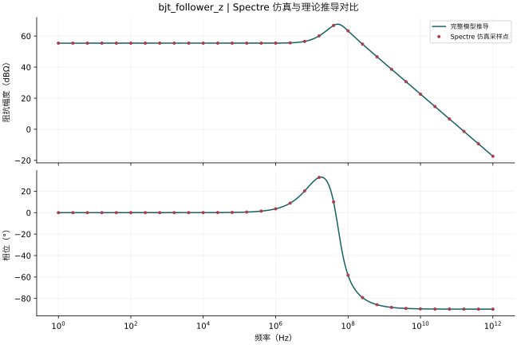
11 · 有源电感与差分调谐负载
本推导组的代表模型已完成 Spectre 验证；覆盖范围以所列网表为准，未逐一搭建所有幻灯片电路。
active_inductor · 显式小信号组件
由 Spectre 输出的复数波形，逐频点与完整式比较；相位与正负号均纳入。 最大相对误差：3.83e-06；保存点数：721。
教材近似式另行比较：在 1 Hz–1 MHz，最大相对偏差为 0.314%。此数字与完整式验证分开；橙色虚线显示近似式。
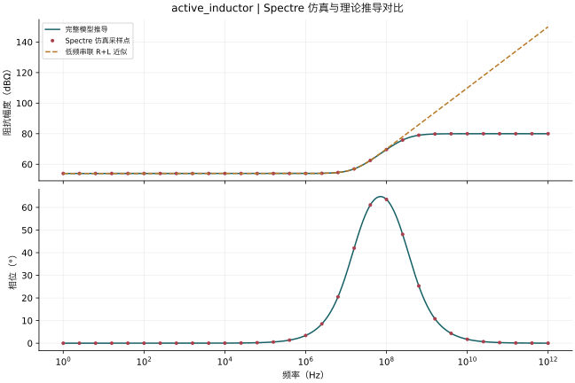
12 · 共栅级的输入、输出与跨阻
本推导组的代表模型已完成 Spectre 验证；覆盖范围以所列网表为准，未逐一搭建所有幻灯片电路。
common_gate · 显式小信号组件
由 Spectre 输出的复数波形，逐频点与完整式比较；相位与正负号均纳入。 最大相对误差：4.46e-07；保存点数：721。
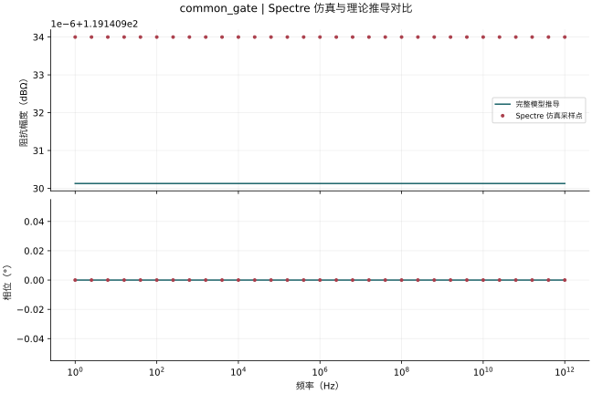
13 · 共源共栅级：有限输出电阻的完整式
本推导组的代表模型已完成 Spectre 验证；覆盖范围以所列网表为准，未逐一搭建所有幻灯片电路。
cascode · 显式小信号组件
由 Spectre 输出的复数波形，逐频点与完整式比较；相位与正负号均纳入。 最大相对误差：4.9e-06；保存点数：721。
教材近似式另行比较：在 1 Hz–1 MHz，最大相对偏差为 0.991%。此数字与完整式验证分开；橙色虚线显示近似式。
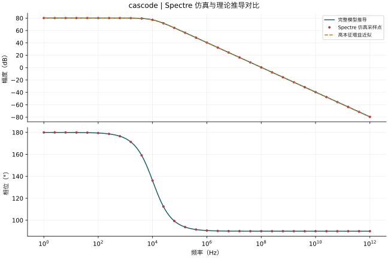
mos_cascode · MOS1 教学晶体管
由 Spectre 输出的复数波形，逐频点与完整式比较；相位与正负号均纳入。 最大相对误差：4.37e-06；保存点数：601。
DC 输出：2 V；所有器件通过饱和区检查。完整式使用实际工作点的 gm、gds 与 Cgs。
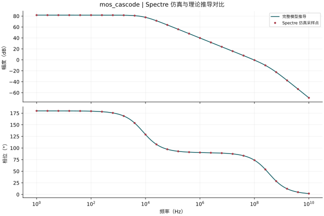
14 · 共源共栅级的米勒电容
本推导组的代表模型已完成 Spectre 验证；覆盖范围以所列网表为准，未逐一搭建所有幻灯片电路。
cascode_miller · 显式小信号组件
由 Spectre 输出的复数波形，逐频点与完整式比较；相位与正负号均纳入。 最大相对误差：4.95e-06；保存点数：721。
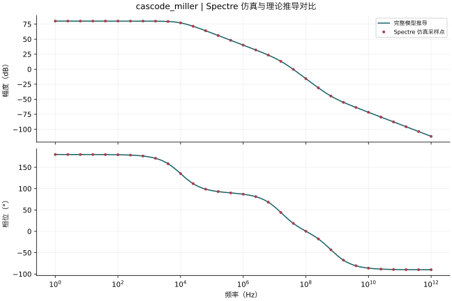
15 · 共源共栅级中间节点电容
本推导组的代表模型已完成 Spectre 验证；覆盖范围以所列网表为准，未逐一搭建所有幻灯片电路。
cascode_cm_small · 显式小信号组件
由 Spectre 输出的复数波形，逐频点与完整式比较；相位与正负号均纳入。 最大相对误差：4.89e-06；保存点数：721。
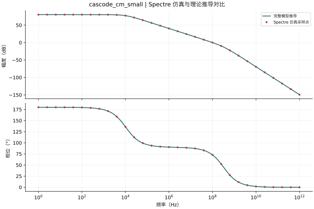
cascode_cm_large · 显式小信号组件
由 Spectre 输出的复数波形，逐频点与完整式比较；相位与正负号均纳入。 最大相对误差：4.95e-06；保存点数：721。
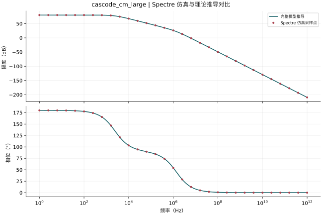
16 · 套筒式与折叠式共源共栅级
本推导组的代表模型已完成 Spectre 验证；覆盖范围以所列网表为准，未逐一搭建所有幻灯片电路。
telescopic · 显式小信号组件
由 Spectre 输出的复数波形，逐频点与完整式比较；相位与正负号均纳入。 最大相对误差：4.9e-06；保存点数：721。
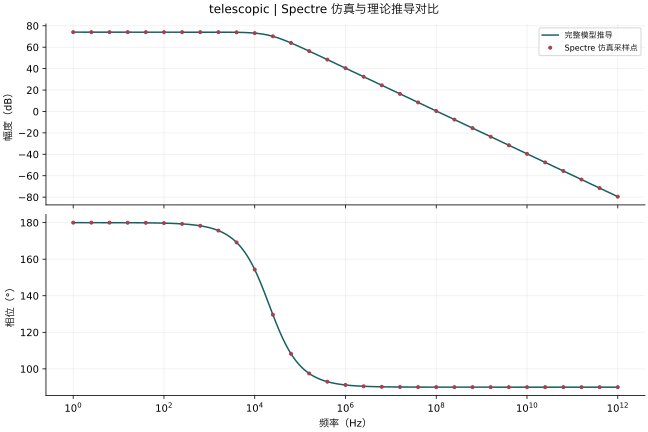
folded · 显式小信号组件
由 Spectre 输出的复数波形，逐频点与完整式比较；相位与正负号均纳入。 最大相对误差：4.37e-06；保存点数：721。
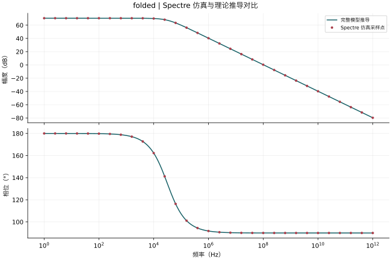
17 · 级联与米勒补偿
本推导组的代表模型已完成 Spectre 验证；覆盖范围以所列网表为准，未逐一搭建所有幻灯片电路。
two_stage · 显式小信号组件
由 Spectre 输出的复数波形，逐频点与完整式比较；相位与正负号均纳入。 最大相对误差：4.4e-06；保存点数：721。
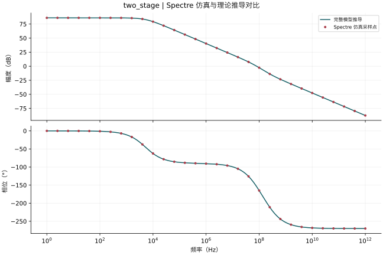
本组另有直接 PZ 结果：two_stage。详见上方极零图与 JSON。
18 · 调节型共源共栅级与增益增强
本推导组的代表模型已完成 Spectre 验证；覆盖范围以所列网表为准，未逐一搭建所有幻灯片电路。
gainboost_slow · 显式小信号组件
由 Spectre 输出的复数波形，逐频点与完整式比较；相位与正负号均纳入。 最大相对误差：4.89e-06；保存点数：721。
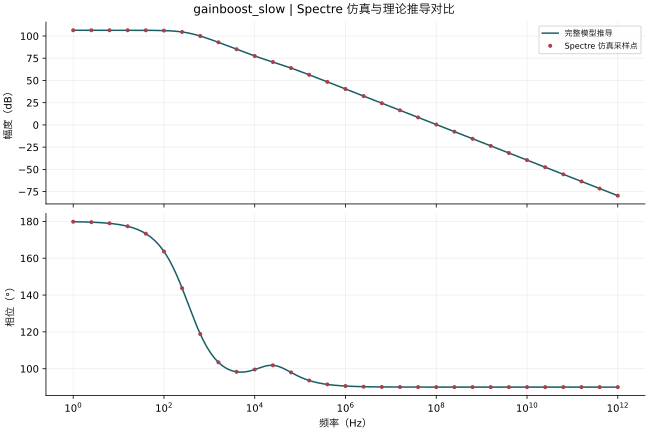
gainboost_fast · 显式小信号组件
由 Spectre 输出的复数波形，逐频点与完整式比较；相位与正负号均纳入。 最大相对误差：4.86e-06；保存点数：721。
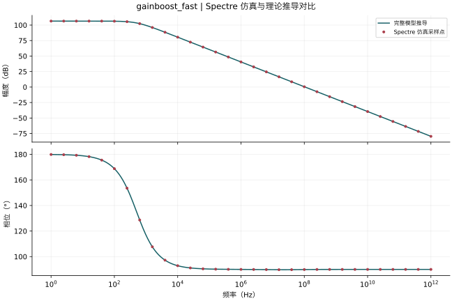
本组另有直接 PZ 结果：gainboost_slow。详见上方极零图与 JSON。
19 · 极零对与高精度建立过程
本推导组的代表模型已完成 Spectre 验证；覆盖范围以所列网表为准，未逐一搭建所有幻灯片电路。
本组的三个瞬态情境及波形见上方极零对小节。
20 · MOS／BJT 端口量总结
本推导组的代表模型已完成 Spectre 验证；覆盖范围以所列网表为准，未逐一搭建所有幻灯片电路。
bjt_degen_gain · 显式小信号组件
由 Spectre 输出的复数波形，逐频点与完整式比较；相位与正负号均纳入。 最大相对误差：5.77e-07；保存点数：721。
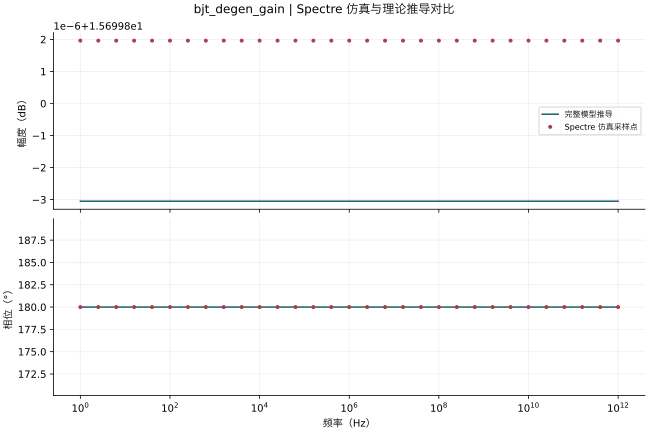
bjt_degen_zout · 显式小信号组件
由 Spectre 输出的复数波形，逐频点与完整式比较；相位与正负号均纳入。 最大相对误差：3.26e-07；保存点数：721。
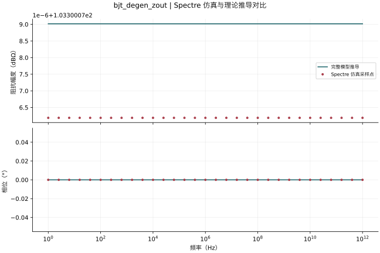
尚待延伸的验证
- 以实际 PDK 替换 MOS1，重新产生 gm/Id、电容和增益查表。
- 本轮针对各推导组的代表模型；例如 0216 的线性区可调 M2、0246–0247 的完整有源电感实现，仍需各自的器件级偏置与稳定性案例。
- BJT 目前使用显式 混合 π 型 等效元件；未使用工艺 BJT 模型扫描偏置。
- 0244 的教材原模型／符号仍待厘清；仿真验证了本项目明列的等效模型，不能反向证明该教材原式。
重现与原始数据
所有正式网表、CSV、图及原始 PSF 都保存在本地工作区。远程 /tmp 只用作运行暂存；不依赖其长期存在。运行命令、exit code 与网表 SHA-256 保存在各 run 的 result.json。